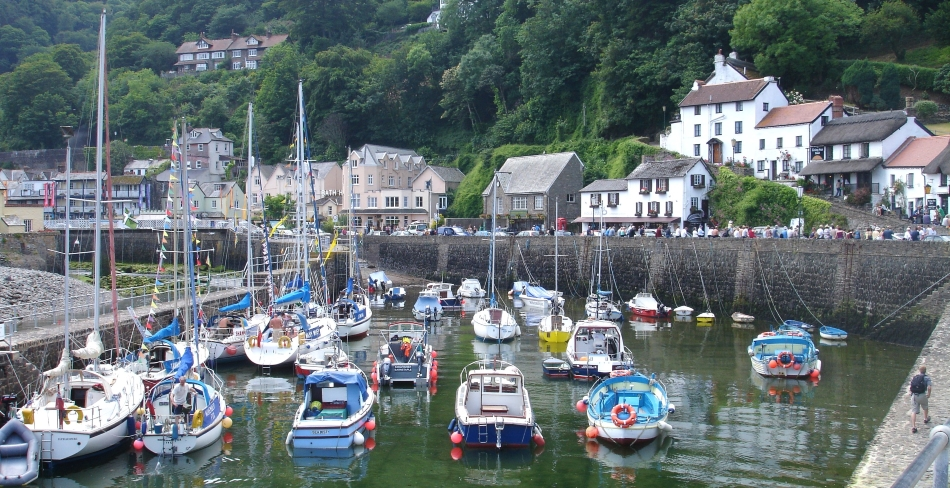

With a choice of either the 4 or 8 seater taxi, we aim to make your journey easy and enjoyable.
Available 7am - 11pm. All other times available by prior arrangement.
Walking in the National park, or just around Lynton and Lynmouth?
With the South West coast path passing right through Lynton and Lynmouth, and the Two Moors Way and the Coleridge Way ending in Lynmouth, we offer a drop-off or collection service for your walk. We can return you to the start of the Two Moors Way at Ivy bridge, and to the start of the Coleridge Way at Nether Stowey.
We also cover many local walks including Simonsbath, Exe Head, Porlock Weir, County Gate, Brendon, Woody Bay, Hunters Inn, Combe Martin, and many more. There is the option of luggage transfers if booked in advance.
Airports and Train Stations
We offer 24 hour drop off and pick up services at Bristol and Exeter airports, and Taunton, Tiverton and Barnstaple rail and bus stations, by prior arrangement.
Our Services
- Local and long distance
- Hospital appointments
- Accompanied well behaved dogs welcome
- Luggage transfer service covering Lynton, Lynmouth, Porlock, Combe Martin and Simonsbath
- Available for group parties, weddings, and tours around the area.
If you require any other information, including prices, availability, or general local knowledge, please do not hesitate to contact us using the contact form, or by calling 07907 161 666


